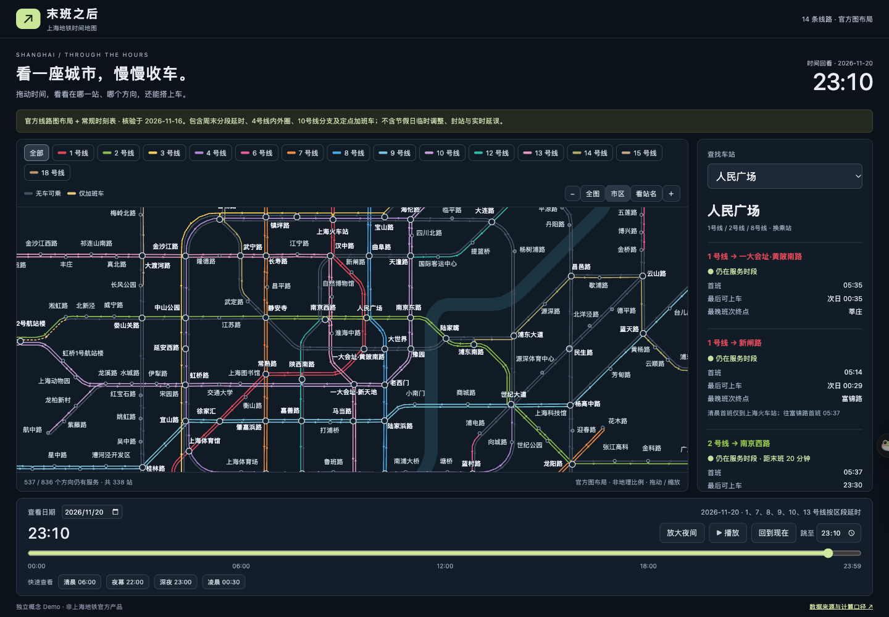
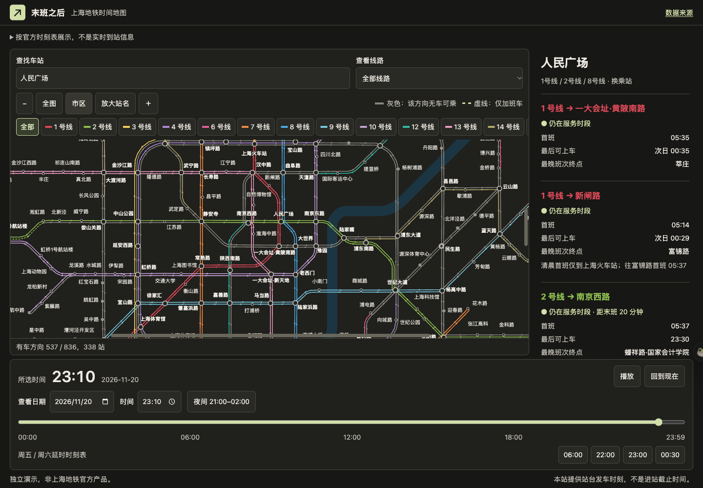
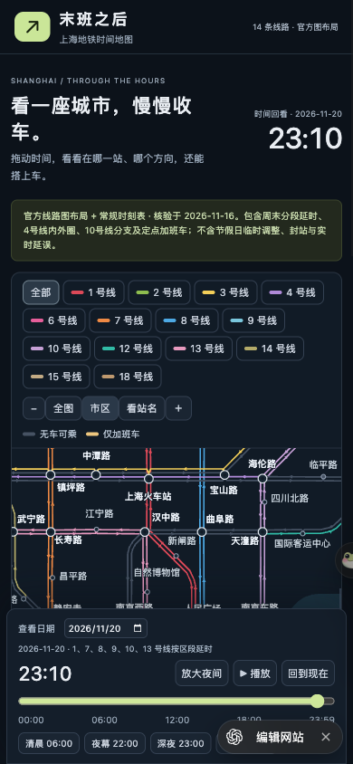
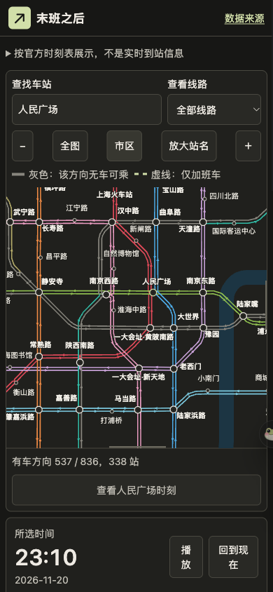

10 组修复，2 组待回修。仅本地审计分支，未发布。保留官方线路布局。
同一状态：2026-11-20 23:10，全部线路，人民广场，市区视图。左为线上旧版，右为本地修复版；点击图片查看原尺寸。
修正主链路与统计，收敛字号和暖灰界面。标题与重复时间收起，站点输入和线路选择放在地图上方。


规则 9：固定时间轴遮挡地图。改为上下顺序排列，地图可见高度约 177 → 371px。仅浏览器模拟，未真机验证。


手机时间面板需要第二轮布局调整；来源页“金色虚线”与旧按钮名需要同步。按技能规则，复查新问题不擅自二次修改。当前不是可发布结论。